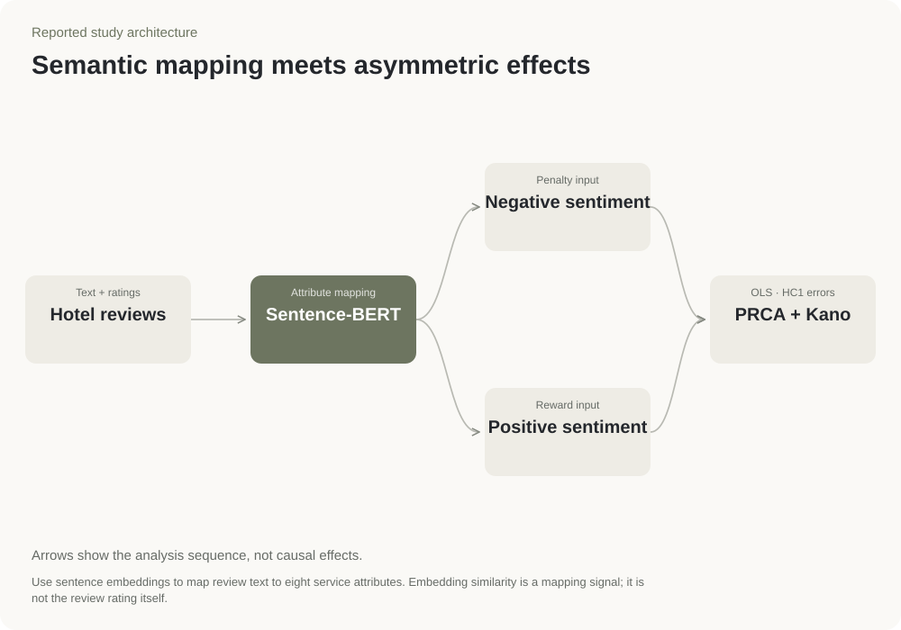

Text + ratings
Hotel reviews
Project materials report 97,014 reviews from approximately 1,000 properties. Retain the review score as a separate outcome.
Hospitality · Vietnam
Compared which service complaints went with lower hotel ratings and which positive comments went with higher ratings.
Customer review analysis · Text analysis · Service planning
A comparison of service failures to prevent and improvements worth investigating.
Review analysis project

The analysis sorted review sentences into eight parts of the hotel experience. It then compared how positive and negative comments about each part related to review scores.
Poor cleanliness had the largest reported link to lower scores. Positive comments about staff service had the largest link to higher scores.
Separate problems that need fixing from improvements that might help a hotel stand out. The comparison gives a starting point for investigating service priorities.
The results link review language with review scores. They do not show how much revenue a service investment would generate.
Penalty shows the link between a service problem and review scores. Reward shows the link for positive feedback. Compare values on the same scale; the signs and estimates are unchanged.
Basic
Basic
Performance
Performance
Performance
Performance
Excitement
Excitement
Cleanliness has a large downside coefficient and a much smaller upside coefficient. The asymmetry makes failure prevention the practical priority.
Reported PRCA coefficients from the project figure; OLS with HC1 robust standard errors.
Sentence-BERT, a text-analysis model, matches sentences to eight hotel service attributes.
Examine positive and negative comments separately to see how each relates to review scores.
The reported categories distinguish expected basics, services where better performance helps, and extras that can delight guests.
Rating = intercept + Σ penaltyj · negativej + Σ rewardj · positivej + error
Coefficients describe the supplied regression specification. The figure does not supply confidence intervals or a return-on-investment estimate.
The language model identifies attributes; PRCA distinguishes reward from penalty.

Text + ratings
Project materials report 97,014 reviews from approximately 1,000 properties. Retain the review score as a separate outcome.
Attribute mapping
Use sentence embeddings to map review text to eight service attributes. Embedding similarity is a mapping signal; it is not the review rating itself.
Penalty input
Construct the negative attribute indicators used in the regression. A penalty coefficient describes a score association when the negative indicator is present.
Reward input
Construct positive attribute indicators separately. Reward and penalty need not be equal in size or opposite in sign.
OLS · HC1 errors
Compare OLS coefficients with HC1 robust standard errors, then classify service attributes. The reported R² = 0.220 describes fit to the supplied sample.